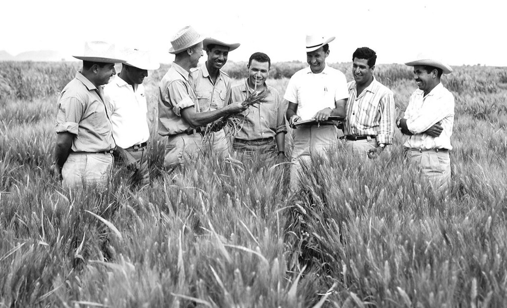

Dr. Norman Borlaug
The man who saved a billion lives

Dr. Norman Borlaug, third from the left,
trains biologist in
Mexico on how to increase wheat yields - part of his
life - long war on hunger.
Here's a Time line of Dr. Borlaug's life:
- 1914- Born in Cresco, lowa
- 1933- Leaves his family's farm to attend a university of Minnesota,
thanks to the depression era program knows as the "National Youth
Adminstration"
- 1935- Has to stop School and save up more money. Works in the
Civilian Conservation Corps, helping starving Americans. "I saw how
food changed them", he said "all of this left scars on me."
- 1937- Finishes University and take a job in the US Foresty service
- 1938- Marries wife of 69 years Margret Gibson. Get laid off due to
budget cuts. Inspired by Elvin Charles Stakman, he reture to school
study under Stakman, who teaches him about breeding pest-
resistans plants
- 1941 - Tries to enroll in the military after the Pearl Harbor attack, but
is rejected. Instead, the military asked his lab to work on waterproof
glue, DDT to control malaria, disinfectants, and other applied
science.
- 1942- Receives a Ph.D. in Genetics and Plant Pathology
- 1944 - Rejects a 100% salary increase from Dupont, leaves behind his
pregnant wife, and flies to Mexico to head a new plant pathology
program. Over the next 16 years, his team breeds 6,000 different
strains of disease resistent wheat - including different varieties for
each major climate on Earth.
- 1945- Discovers a way to grown wheat twice each season, doubling
wheat yields
- 1953 - crosses a short, sturdy dwarf breed of wheat with a high-
yeidling American breed, creating a strain that responds well to
fertilizer. It goes on to provide 95% of Mexico's wheat.
- 1962 - Visits Delhi and brings his high-yielding strains of wheat to the
Indian subcontinent in time to help mitigate mass starvation due to
a rapidly expanding population
- 1970- receives the Nobel Peace Prize
- 1983- helps seven African countries dramatically increase their
maize and sorghum yields
- 1984- becomes a distinguished professor at Texas A&M University
- 2005 - states "we will have to double the world food supply by 2050."
Argues that genetically modified crops are the only way we ca
meet the demand, as we run out of arable land. Says that GM crops
are not inherently dangerous because "we've been genetically
modifying plants and animals for a long time. Long before we called
it science, people were selecting the best breeds."
- 2009- dies at the age of 95.
"Borlaug's life and achievement are testimony to the far-reaching
contribution that one man's towering intellect, persistence and
scientific vision can make to human peace and progress."
-- Indian Prime Minister Manmohan Singh
If you have time, you should read more about this incredible human being on his
Check Wikipedia for more.
Designed by Etinyene Ededem